Tagi ASS
Tagi ASS
Następująca lista zawiera tagi formatu Advanced Substation Alpha.
Znaki specjalne
Wstawiane są one w tekście, nie w nawiasach { }.
Miękkie łamanie linii: \n
Wstawia łamanie linii działające tylko w przypadku, gdy w właściwościach jest ustawiony styl łamania linijek na 2 bądź użyjemy tagu stylu łamania linijek \q2. W przeciwnym wypadku zastępuje je zwykłą spacją.
Twarde łamanie linii: \N
Wstawia łamanie linii działające niezależnie od stylu łamania linijek. Zauważ, że jest to duża litera N.
Twarda Spacja: \h
Wstawia twardą spację, po której nie łamie linijek ani też nie jest usuwana, gdy znajduje się przed albo po łamaniu.
Tagi
Muszą one znajdować się w blokach zaczynających się { i kończących }, nierozpoznany tekst w blokach zostaje ignorowany, więc równie dobrze może być wykorzystany jako komentarz. Łączenie komentarzy i tagów w jednym bloku nie jest zalecane, aczkolwiek działa, chyba że zależy to od wersji Vsfiltra czy innego filtra napisów.
Tagi dzielą się na dwie kategorie: tagi które działają na całą linię i tagi modyfikujące tekst znajdujący się po nich.
Do pierwszych należą \pos, \move, \clip, \iclip, \org, \fade i \fad. Te tagi powinny być użyte maksimum raz na linijkę, a ich pozycja w linijce nie jest ważna. W dodatku tagi \pos i \move, \clip i \iclip, \fade i \fad wzajemnie się wykluczają i nie należy używać ich w tej samej linijce (wynik użycia tych tagów razem zależy od filtra wyświetlającego napisy i może być różny).
Pozostałe tagi modyfikują tekst od momentu ich postawienia do końca linijki albo zmiany przez ten sam tag.
Tagi mają zawsze podobną formę, zaczynają się backslashem \, po nim nazwa taga i na końcu parametr lub grupa parametrów. Gdy opuścimy parametr, to brany jest wtedy domyślny ze stylu linii.
W przypadku gdy tag zawiera więcej parametrów to są one brane w nawias i pooddzielane przecinkami.
Objaśnienia zapisu w przykładach:
Wszystko pisane kursywą, znajdujące się pomiędzy < > Należy zastąpić parametrem, wartością liczbową bądź tekstem, wszystko zależy od tagu. Te nawiasy nie są częścią parametru więc należy je pominąć. Poza tym każdy tag ma podane przykłady użycia.
Kursywa
\i1
\i0
Ustawia kursywę bądź ją likwiduje. Użyj \i1 by ustawić kursywę i \i0 by ją usunąć.
Przykład:
To jest {\i1}przykład{\i0} kursywy.
Wyraz przykład będzie pochylony.
Pogrubienie
\b1
\b0
\b<wartość>
Włącza bądź wyłącza pogrubienie. Użyj \b1, by włączyć pogrubienie, a \b0 by je wyłączyć.
\b<wartość> pozwala na ustawienie wartości pogrubienia, gdy czcionka na to pozwala. Większość czcionek niestety przyjmuje tylko dwie wartości, czyli pogrubiona i nie pogrubiona. Wartości są mnożnikiem liczby 100, czyli 100 najniższa wartość, 400 normalna wartość pogrubienia, 700 pogrubienie, 900 największe pogrubienie.
Przykłady:
To jest {\b1}przykład{\b0} pogrubienia.
Wyraz przykład będzie pogrubiony.
{\b100}Jak {\b300}bardzo {\b400}da {\b500}się {\b700}pogrubić {\b900}tekst?
Pogrubienie tekstu będzie rosnące o ile czcionka ma więcej wartości pogrubiania tekstu niż tylko pogrubiony i nie pogrubiony.
Podkreślenie
\u1
\u0
Włącza bądź wyłącza podkreślenie. Użyj \u1 by włączyć podkreślenie i \u0, by je wyłączyć.
Przykład:
To jest {\u1}przykład{\u0} podkreślenia.
Wyraz przykład będzie podkreślony.
Przekreślenie
\s1
\s0
Włącza bądź wyłącza przekreślenie. Użyj \s1 by włączyć przekreślenie i \s0, by je wyłączyć.
Przykład:
To jest {\s1}przykład{\s0} przekreślenia.
Wyraz przykład będzie przekreślony.
Rozmiar obwódki
\bord<rozmiar>
Ustawia rozmiar obwódki wokół tekstu. Wartość 0 całkowicie usuwa obwódkę.
Jeśli "skalowana obwódka i cień" w właściwościach ASS jest włączona, to rozmiar ustawiany jest według rozdzielczości napisów, w przeciwnym wypadku wg rozdzielczości wideo, co znaczy, że jej grubość zależy od rozdzielczości wideo, im większa rozdzielczość, tym cieńsza obwódka.
Rozmiar nie jest ograniczony do liczb całkowitych, więc może zawierać też liczby po przecinku, tyle że to angielski system i zamiast przecinka stawiamy kropkę. Obwódka nie może przyjmować liczb ujemnych.
Przykłady
\bord0
Całkowity brak obwódki.
\bord4
Obwódka o rozmiarze 4 pikseli, należy tu pamiętać o stawianiu kropek zamiast przecinków.

Rozmiar obwódki z podziałem na wysokość i szerokość
\xbord<rozmiar>
\ybord<rozmiar>
Użyj \xbord i \ybord by ustawić szerokość bądź wysokość obwódki (kierunki X i Y) niezależnie.
Zauważ, że użycie \bord po \xbord bądź \ybord w jednej linijce zmieni obie wartości jednocześnie.
Możesz łatwo ustawić obwódkę 0 w jednym z kierunków, usuwając ją całkowicie.
Przykłady

Wielkość cienia
\shad<wielkość>
Ustawia odległość cienia od tekstu. Wartość 0 wyłącza cień całkowicie.
Działa podobnie do \bord.
Ten tag nie przyjmuje wartości ujemnych.
Przykłady

Wielkość cienia w kierunkach X i Y
\xshad<wielkość>
\yshad<wielkość>
Ustawia odległość cienia od tekstu w kierunkach X i Y. Cień można wyłączyć gdy obie wartości są równe 0.
Zauważ, że w odróżnieniu do \shad można ustawić wartości ujemne co sprawi, że cień pojawi się w górnym bądź lewym rogu tekstu.
Przykłady

Rozmycie konturów
\be<siła rozmycia>
\be0
Włącza i ustawia siłę rozmycia konturów tekstu, bądź wyłącza ją całkowicie.
Zauważ, że w przypadku, gdy nie ma obwódki to rozmyciu ulega sama czcionka, a w przypadku gdy jest obwódka i cień jednocześnie, to obydwa ulegają rozmyciu, daje często ciekawy efekt, gdy te kolory sporo różnią się od siebie.
Ten tag nie nadaje się zbytnio do ustawiania zbyt dużych sił rozmycia, ponieważ od pewnego momentu obiekt staje się coraz bardziej przezroczysty aż później całkowicie znika. Gdy potrzebujemy dużego, stopniowego rozmycia lepiej użyć tagu \blur opisanego poniżej.
Siła rozmycia musi przyjmować wartości całkowite.
Przykłady

Rozmycie konturów (Gaussian blur)
\blur<siła rozmycia>
Generalnie efekt jest podobny do \be, jednakże wykorzystuje przy tym bardziej złożony algorytm, który wygląda lepiej przy dużych wartościach siły. W odróżnieniu do \be siła może przyjmować wartości po przecinku (oczywiście stosujemy tu zapis z kropką zamiast przecinka np 2.7). Wartość 0 wyłącza całkowicie efekt rozmycia.
Uwaga, zbyt duża siła rozmycia powoduje duże użycie procesora a co za tym idzie na wszystkich innych filtrach do wyświetlania napisów oprócz XY-Vsfilter powoduje duże ścięcia obrazu.
Zauważ, że w przypadku, gdy nie ma obwódki to rozmyciu ulega sama czcionka, a w przypadku gdy jest obwódka i cień jednocześnie, to obydwa ulegają rozmyciu, daje często ciekawy efekt, gdy te kolory sporo różnią się od siebie.
Przykłady

Nazwa czcionki
\fn<nazwa>
Wyświetla tekst używając danej czcionki od miejsca postawienia tagu. Pomiędzy tagiem \fn i nazwą czcionki nie powinno być spacji ani też nazwa nie może być w nawiasach. W Windowsie wielkość liter nazw czcionek nie ma żadnego znaczenia, równie dobrze można napisać \fnaRiAl i też będzie działać.
Przykłady
\fnArial
Tekst po tym tagu będzie wyświetlony czcionką Calibri.
\fnTimes New Roman
Tekst po tym tagu będzie wyświetlony czcionką Times New Roman.
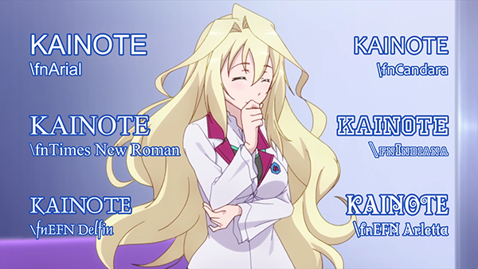
Rozmiar Czcionki
\fs<rozmiar>
Ustawia rozmiar czcionki. Rozmiarem tym jest wysokość w pikselach określona wg rozdzielczości napisów, więc czcionka o rozmiarze 40 ma dokładnie wysokość 40 pikseli oczywiście o ile rozdzielczość napisów jest taka sama jak wideo i nie jest ono skalowane.
W zależności od filtra do napisów rozmiar może przyjmować tylko wartości całkowite bądź po przecinku, w każdym razie, XY-Vsfilter użyty w Kainote pozwala na użycie liczb niecałkowitych. Należy to mieć na uwadze, tworząc softsuby.
Przykład
\fs50
Rozmiar czcionki po tym tagu będzie wynosić 50.
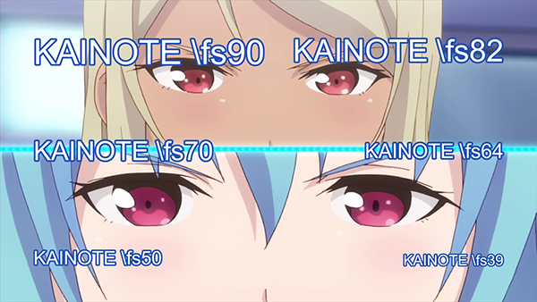
Skala czcionki
\fscx<skala>
\fscy<skala>
Ustawia rozmiar czcionki w kierunku X (\fscx) i Y (\fscy). Skala podawana jest w procentach oryginalnego rozmiaru.
To nie to samo co rozmiar czcionki, zmiana rozmiaru czcionki wyznacza hinting, a podczas skalowania modyfikuje kształt czcionki po hintingu. Dlatego też w tagu \t (opisany tutaj) należy zawsze używać \fscx i \fscy zamiast \fs, ponieważ efekt wtedy nie jest zbyt płynny, widać przeskoki.
Te tagi także zmieniają rozmiar rysunków ASS (wektorowych).
Zauważ że starsze wersje VSFiltra używają w tych tagach tylko liczb całkowitych i obcinają wszystkie liczby po przecinku. Jednakże XY-Vsfilter użyty w Kainote pozwala na użycie liczb niecałkowitych.
Przykłady
\fscx180
Ustawia tekst szerszy o 80%.
\fscy50
Ustawia tekst o połowę niższy niż normalny.
\fscx200\fscy200
Ustawia test o podwójnym rozmiarze.
W każdym przykładzie tyczy się to od momentu postawienia tagu.

Odległość pomiędzy literami
\fsp<odległość>
Zmienia odległość pomiędzy literami tekstu. Można używać, by rozproszyć trochę tekst. Ustawiana jest w pikselach wg rozdzielczości napisów.
Odległość może być również ujemna.
Przykład
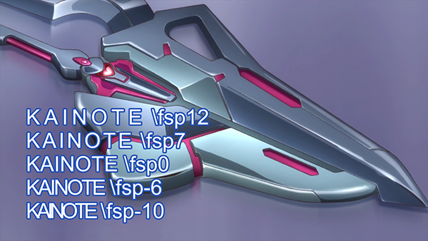
\fr<wartość>
\frz<wartość>
\fry<wartość>
\frx<wartość>
Obraca tekst wokół osi Z, Y i X. Tag \fr to skrócona nazwa tagu \frz.
- Oś Z wartość dodatnia powoduje obrót przeciwny do kierunku zegara w stopniach, 360 to pełny obrót.
- Oś Y obraca tekst wokół osi pionowej. Używając wartości dodatnich powoduje, że tekst lewą stroną przybliża się do nas a prawą oddala.
- Oś X obraca tekst wokół osi poziomej. Używając wartości dodatnich powoduje, że tekst dołem przybliża się do nas a górą oddala.
Obrót podawany jest w stopniach, gdzie 360 stopni to pełny obrót i każda wielokrotność 360 w ogóle nie daje obrotu, co w cale nie jest złe, bo używając obrotów w tagu \t można wielokrotnie obracać.
Obrót odbywa się wokół punktu początkowego oznaczonego tagiem \org.
Te tagi także wpływają na rysunki ASS (wektorowe).
Przykłady
\frx40
Obraca tekst wokół osi X o 40 stopni.
\fry-50
Obraca tekst wokół osi Y o 50 stopni w przeciwną stronę.
\frz180
Obraca tekst o 180 stopni czyli ustawia go do góry nogami.
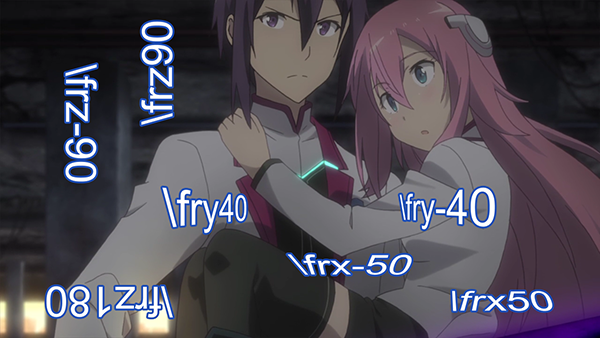
\t(\frz1800)
Tworzy animację wykonującą pięć pełnych obrotów tekstu.
Pochylenie tekstu
\fax<wartość>
\fay<wartość>
Pochyla tekst na osi X i Y. Wartość 0 to brak pochylenia, ten tag zwykle przyjmuje małe wartości od -2 do 2 daje pożądany efekt, powyżej tekst już jest tak zniekształcony że nie można go przeczytać.
Pochylenie wykonywane jest zaraz po obracaniu, pochylenie jest niezależne od punktu początkowego \org.
Przykłady
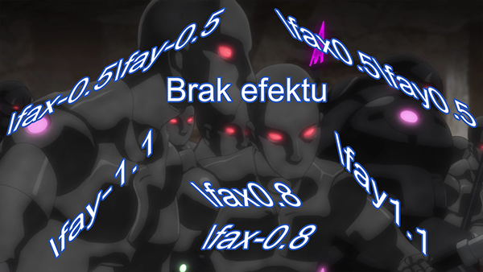
Siła efektu zależy też od długości tekstu w przypadku \fay i wysokości tekstu w przypadku \fax.
Kodowanie tekstu
\fe<id>
Ustawia kodowanie czcionki, które w głównej mierze zależy od kodowań ustawionych w czcionce. Zwykle jest tak, że jeśli wstawimy kodowanie nie obsługiwane przez czcionkę to pojawi nam się Arial.
Poniżej wymienię częściej używane idy.
- 0 - Ansi Windows 1252 dla języków zachodnioeuropejskich.
- 1 - Domyślne kodowanie, które w zależności od kodowań czcionek zwykle samo wybiera właściwe kodowanie, najbardziej zalecane kodowanie gdy sami nie wiemy jakie czcionka obsługuje.
- 2 - Symbol. Kodowanie, które jest używane z czcionkami z symbolami np. Webdings.
- 128 - Shift-JIS, kodowanie języka japońskiego.
- 129 - Kodowanie Hangul języka koreańskiego.
- 130 - Kodowanie Johab języka koreańskiego.
- 134 - Kodowanie GB2312 używane do języka chińskiego uproszczonego.
- 136 - Kodowanie BIG5 używane do języka chińskiego tradycyjnego.
- 162 - Kodowanie języka tureckiego.
- 163 - Kodowanie języka wietnamskiego.
- 177 - Kodowanie języka hebrajskiego.
- 178 - Kodowanie języka arabskiego.
- 186 - Kodowanie języków bałtyckich.
- 204 - Kodowanie języka rosyjskiego.
- 222 - Kodowanie języka tajskiego.
- 238 - Kodowanie języków środkowoeuropejskich w tym polskiego, jednakże część czcionek ma polskie litery a obsługuje tylko kodowanie ANSI.
- 255 - Kodowanie OEM.
Zmiana koloru
\c&H<niebieski><zielony><czerwony>&
\1c&H<niebieski><zielony><czerwony>&
\2c&H<niebieski><zielony><czerwony>&
\3c&H<niebieski><zielony><czerwony>&
\4c&H<niebieski><zielony><czerwony>&
Zmienia kolor od momentu postawienia tagu. Tag \c to skrócona wersja \c1. Kolor podajemy w liczbach szesnastkowych od 00 do FF czyli od 0 do 255 i w odróżnieniu np do HTML w ASS jest BGR a nie RGB. Kolory zawsze muszą zaczynać się &H i kończyć &. Nikt nam nie każe wpisywać tych kolorów ręcznie, od tego jest okno wyboru kolorów.
- \1c zmienia kolor czcionki.
- \2c zmienia kolor zastępczy, czyli kolor czcionki, który jest widoczny, gdy użyjemy podziału karaoke, wtedy czcionka jest w tym kolorze, zanim tekst zostanie odśpiewany, po czym zmienia się na kolor \1c.
- \3c zmienia kolor obwódki.
- \4c zmienia kolor cienia.
Przyciski, które włączają okno wyboru kolorów wyglądają następująco  , są ustawione po kolei tak jak widać to w opisie.
, są ustawione po kolei tak jak widać to w opisie.
Zmiana przezroczystości
\alpha&H<przezroczystość>&
\1a&H<przezroczystość>&
\2a&H<przezroczystość>&
\3a&H<przezroczystość>&
\4a&H<przezroczystość>&
Zmienia przezroczystość tekstu.
- \alpha zmienia przezroczystość wszystkich elementów tekstu za jednym razem od momentu postawienia tagu.
- \1a zmienia przezroczystość czcionki.
- \2a zmienia przezroczystość koloru zastępczego.
- \3a zmienia przezroczystość obwódki.
- \4a zmienia przezroczystość cienia.
Przezroczystość także jest podawana w liczbach szesnastkowych. Wartość 00 (0 w liczbach dziesiętnych) daje nam brak przezroczystości a FF (255 w liczbach dziesiętnych) daje niewidoczny tekst.
Przezroczystość można wybrać, korzystając z przycisków do wyboru koloru i tam można ją wybrać na suwaku więc wpisać ręcznie jako liczba dziesiętna, co ułatwia pracę.
\an<położenie>
\a<położenie>
Ustawia położenie linijki oczywiście jeśli nie użyliśmy tagu pozycji \pos bądź ruchu \move, czy też któregoś tagu obracania tekstu, gdzie wtedy stanowi dla nich kotwicę.
Tag \an przyjmuje wartości od 1 do 9. Odległość od krawędzi ekranu ustawiana w tym przypadku jest albo w marginesach stylów albo w marginesach linijek.
- Dolny lewy róg.
- Wypośrodkowanie na dole.
- Dolny prawy róg.
- Wypośrodkowanie po lewej.
- Środek ekranu.
- Wypośrodkowanie po prawej.
- Górny lewy róg.
- Wypośrodkowanie u góry.
- Górny prawy róg.
Położenie tylko przy uwzględnieniu marginesów, bez tagu \pos czy \move.

Wersja druga jest nieco trudniejsza i jest głównie używana w formacie SSA, w ASS uznany jest za przestarzały, choć też działa ale jest za to mniej intuicyjny więc zalecam używanie \an. Numery pozycji wyglądają następująco:
- 1: Dolny lewy róg.
- 2: Wypośrodkowanie na dole.
- 3: Dolny prawy róg.
- 5: Górny lewy róg.
- 6: Wypośrodkowanie u góry.
- 7: Górny prawy róg.
- 9: Wypośrodkowanie po lewej.
- 10: Środek ekranu.
- 11: Wypośrodkowanie po prawej.
Podział karaoke
\k<długość sylaby>
\K<długość sylaby>
\kf<długość sylaby>
\ko<długość sylaby>
Zauważ, że te tagi dają tylko proste efekty karaoke, ale za to dzięki ich użyciu można tworzyć bardzo zaawansowane efekty, korzystając z skryptów Lua bądź template.
Tag \k ustawia czas trwania poszczególnych sylab, należy go wstawić przed każdą sylabą danej linijki.
Czas trwania sylaby liczony jest w setnych sekundy, przykładowo \k100 daje nam czas trwania sylaby równy jednej sekundzie. Do wstawiania tego tagu służy opcja tworzenia podziału karaoke.
Tagi \k tworzą następujące efekty:
- \k daje efekt przejścia, zmieniając tekst całej sylaby z koloru zastępczego na kolor podstawowy.
- \K (duża litera K) bądź \kf dają efekt stopniowego przejścia z lewej do prawej z koloru zastępczego na podstawowy.
- \ko podobny jest do efektu \k z taką różnicą, że tekst jest bez obwódki która pojawia się w momencie śpiewania, zawsze w całości na każdej sylabie, nie dając przy tym żadnej dodatkowej animacji.
- \kt podobny do \k ale resetuje czas sylaby do 0, czyli gdy postawimy w środku linijki \kt to sylaby od jego postawienia będą się "odśpiewywać" tak samo jak te na początku, a wstawienie \kt do całej linijki spowoduje "odśpiewanie" całości po pierwszej sylabie. Tag ten do karaoke się nie nadaje i też nie jest on wspierany w Lua ani template.
\q<styl>
Ustala jak mają być łamane linie. Są one takie same jak w właściwościach ASS.
- 0 i 3 dzielą automatycznie starając się zachować zbliżoną wielkość linii tyle że w przypadku 0 górna jest szersza a 3 dolna jest szersza,
- 1 dzieli dopiero gdy już tekst nie mieści się w linijce nie próbując wyrównywać linijek, pierwsza linia jest pełna a w drugiej może być tylko jeden wyraz.
- 2 dzielą tylko znaki specjalne \N i \n.
Resetowanie stylu
\r
\r<styl>
Resetuje styl, anulując wszystkie tagi wstawiane przed nim w linijce w tym animacje tworzone tagiem \t.
Pierwsza forma resetuje styl do stylu ustawionego dla całej linii, a druga dla stylu wpisanego po tagu.
Przykład
- Hej!\N{\rAlternatywny}- Co?\N{\r}- Kim jesteś?
Przypuśćmy że cała linia ma styl "Domyślny" więc "Hej!" zostanie wyświetlone w stylu "Domyślny", "Co?" w stylu "Alternatywny", a "Kim jesteś?" ponownie w stylu "Domyślny".
\pos(<X>,<Y>)
Ustawia pozycję linijki zależną od położenia linijki \an, które jest dla niej kotwicą. Koordynaty X i Y wyznaczane są według rozdzielczości napisów, nie muszą być liczbami całkowitymi, od roku albo więcej wszystkie wersje Vsfiltra obsługują już liczby niecałkowite.
Zamiast znów przywoływać tekst opisany przy położeniu linijki najlepiej pokażę wszystko na przykładach.
Przykład
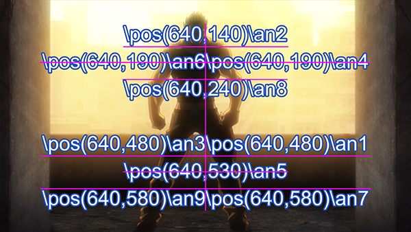
Przecięcia różowych linii to kotwice przy podanych położeniach \an. By przykład był czytelniejszy zwiększałem co 50 pozycje, dzięki czemu tekst częściowo nie nachodzi na siebie.
Ruch
\move(<X1>,<Y1>,<X2>,<Y2>)
\move(<X1>,<Y1>,<X2>,<Y2>,<t1>,<t2>)
Ten tag działa podobnie do \pos, tyle że przemieszcza dodatkowo napis z punktu (X1, Y1) do punktu (X2, Y2). Tak samo jak w przypadku \pos koordynaty X i Y wyznaczane są według rozdzielczości napisów.
Dwie wersje ruchu różnią się tym, że w pierwszej linijka jest przemieszczana przez cały czas jej wyświetlania, a w drugim przypadku między czasem t1 a t2 podanymi w milisekundach.
Odnośnie czasów to przykładowo gdy za t1 podstawimy 1500 a za t2 3000 to w czasie do 1500 tekst nieruchomy stoi w punkcie (X1, Y1), od 1500 zaczyna się poruszać i w czasie 3000 znajduje się już w pozycji (X2, Y2). Ustawianie wyższych czasów t1 i t2 niż trwanie linijki nie jest zabronione, lecz wtedy tekst cały czas będzie stał w pozycji (X2, Y2). W przypadku gdy t2 przekroczymy czas trwania linii wtedy nie dojdzie ona w ogóle do punktu (X2, Y2). W takim razie co zrobić, by linia była w tym punkcie, gdy skończy się jej czas? Wystarczy za t2 podstawić cokolwiek nawet tekst w tym przypadku działa, ale wystarczy tam 0 bądź -1. Na tej samej zasadzie działa wstawienie zera za t1 i za t2, wtedy dostaniemy pierwszą wersję ruchu, która będzie przemieszczać przez cały czas trwania linijki.
Ograniczenia tagu ruchu:
- Brak możliwości ustawienia nieliniowej prędkości, to znaczy nie może np. zacząć się powoli a skończyć szybko, jednakże jest to osiągalne wykorzystując tag animacji \t.
- W każdej linijce może być tylko jeden tag \move i wstawienie kolejnych nic nie zmieni, bo zadziała tylko pierwszy. Gdy potrzebujemy kilka razy przemieścić linijkę, trzeba ją powielić tyle razy, ile potrzeba ruchów, ustawić odpowiednie czasy i w każdej dać tag \move.
Przykłady
\move(100,150,300,350)
Linia pojawia się w punkcie (100,150), po pojawieniu porusza się ze stałą prędkością aż dotrze do punktu (300,350) i wtedy znika.
\move(100,150,300,350,500,1500)
Linia pojawia się w punkcie (100,150), po pojawieniu stoi w tym punkcie przez 500 milisekund, po czym porusza się
ze stałą prędkością aż dotrze do punktu (300,350) przez sekundę i od 1500 milisekundy stoi w punkcie (300,350) do końca czasu trwania linijki i wtedy znika.
Punkt początkowy obrotu
\org(<X>,<Y>)
Ustawia punkt początkowy używany przy obrocie. Ma wpływ na wszystkie tagi obracania w linijce. Koordynaty X i Y są ustawiane według rozdzielczości napisów.
Gdy nie ma ustawionego \org w linii to punkt początkowy obracania jest ustawiany według pozycji tekstu, co sprawi, że gdy użyjemy ruchu bez punktu początkowego, to domyślny punkt początkowy będzie przemieszczał się razem z linijką.
Zauważ, że nie możesz animować punktu \org, jest stały dla każdej linijki.
Można również ustawić punkt \org bardzo daleko poza ekranem co powoduje przy małych obrotach spory ruch linijki, używając animacji można zrobić nieliniowy ruch, bądź wiele ruchów w jednej linijce, choć nie jest łatwo go "okiełznać". W każdym razie są na to łatwiejsze sposoby.
Tylko jeden \org może znajdować się w linijce, gdy wstawisz więcej, użyty jest tylko pierwszy.
Przykłady
\org(320,240)
Ustawia punkt początkowy obrotu w pozycji (320,240).
\org(10000,0)
Punkt początkowy ustawiony daleko poza ekranem, powodujący, że niewielkie wartości obrotu (np. \frz) przemieszczają tekst o dużą wartość pikseli, a obrót tekstu jest zupełnie niezauważalny.
Pojawianie i znikanie linijki
\fad(<pojawianie się><znikanie>)
Powoduje efekt pojawiania się i znikania tekstu. Czasy pojawiania i znikania podajemy w milisekundach. Czasy zerowe dają brak efektu pojawiania i znikania.
efekt pojawia nie dodaje czasu pojawiania i znikania do czasów startowego i końcowego, tylko robi to w czasie wyświetlania linijki. Z tego powodu suma czasów pojawiania i znikania nie może być większa od czasu trwania linijki. Przykładowo, gdy linia trwa przez 4 sekundy, to suma czasu pojawiania i znikania nie może być większa niż 4000.
Przykład
\fad(1200,250)
Linia pojawia się przez 1.2 sekundy i zaczyna znikać 1/4 sekundy przed zakończeniem wyświetlania linii.
Rozszerzone pojawianie i znikanie linijki
\fade(<a1><a2><a3><t1><t2><t3><t4>)
Powoduje złożony efekt pojawiania i znikania, wykorzystując 3 wartości przezroczystości a1 do a3 i cztery czasy t1 do t4.
Wartości przezroczystości podajemy w liczbach dziesiętnych od 0 do 255, gdzie 0 to pełna widoczność, a 255 to niewidoczny tekst. Czasy podawane są jak w przypadku \fad w milisekundach. Wymagane jest wszystkie 7 parametrów. W większości przypadków wystarczy zwykłe jednak zwykłe \fad.
- Przed czasem t1 linia ma przezroczystość a1.
- Pomiędzy czasem t1 a t2 wykonywane jest przejście z przezroczystości a1 do a2.
- Pomiędzy czasem t2 a t3 linia ma przezroczystość a2.
- Pomiędzy czasem t3 a t4 wykonywane jest przejście z przezroczystości a2 do a3
- Po czasie t4 linia ma przezroczystość a3.
Nie pisałem w tym przypadku pojawianie i znikanie, bo wszystko zależy od wartości przezroczystości ustawionych w \fade.
Przykład
\fade(255,32,224,0,500,2000,2200)
Linia na początku jest niewidoczna, po przejściu jest prawie całkowicie widoczna, po czym staje się prawie niewidoczna. Przejście pierwsze zaczyna się od czasu początkowego linii i trwa przez pół sekundy. Przejście drugie zaczyna się półtora sekundy później i trwa przez 1/5 sekundy.
Animowane przejście
\t(<tagi>)
\t(<przyspieszenie>,<tagi>)
\t(<t1>,<t2>,<tagi>)
\t(<t1>,<t2>,<przyspieszenie>,<tagi>)
Wykonuje przejście z jednego tagu na drugi. W przypadku gdy w linijce nie ma wcześniej owego tagu, wykorzystuje wartości ze stylów.
Tagi pozwalające na animację przy użyciu \t:
Czcionka |
Geometria |
Pozostałe efekty |
\fs |
\fscx |
\bord |
\fsp |
\fscy |
\xbord |
\c lub \1c |
\frx |
\ybord |
\2c |
\fry |
\shad |
\3c |
\fr lub \frz |
\xshad |
\4c |
\fax |
\yshad |
\alpha |
\fay |
\clip |
\1a |
\iclip |
|
\2a |
\be |
|
\3a |
\blur |
|
\4a |
Zauważ, że można animować tylko prostokątne wersje \clip i \iclip, rysunki ASS nie mogą być animowane tym tagiem (jest to wykonalne za to skryptami Lua).
Nie należy także mieszać \clip i \iclip w jednym tagu \t.
Czas t1 i t2 ustawiają czas trwania przejścia, w przypadku braku tego czasu przejście trwa przez cały czas trwania linijki.
Te czasy są podawane w milisekundach i są zależne od czasów linijki.
Parametr przyspieszenia służy do efektów nieliniowych, gdy wynosi 1 daje nam animację liniową, wartości w przedziale od 0 do 1 daje nam szybkie początek animacji i wolne zakończenie animacji, wartość powyżej liczby jeden daje wolny początek i szybki koniec animacji.
Przed czasem t1 wygląd napisów jest niezmieniony a po czasie t2 zostaje zmieniony używając tagów wyszczególnionych w nawiasie po \t. Pomiędzy czasem t1 a t2 następuje przejście z jednych tagów na drugie.
Przykłady
{\1c&HFF0000&\t(\1c&H0000FF&)}Witaj!
Tekst pojawia się na niebiesko, zmieniając się na czerwony pod koniec linijki.
{\an5\t(0,3000,\frz-3600)}Hura!
Tekst obraca się 10 razy w kierunku obrotów zegara przez 3 sekundy, po czym stoi nieruchomo aż do końca trwania linijki.
{\an5\t(0,3000,0.5,\frz-3600)}Hura!
Tak samo jak powyżej tekst obraca się 10 razy w 3 sekundy, jednakże na początku obraca się szybko a na końcu obraca się już bardzo wolno.
{\an5\fscx0\fscy0\t(0,500,\fscx100\fscy100)}Bee!
Tekst zaczyna animację od rozmiaru zerowego, czyli jest niewidoczny i w pół sekundy rośnie do rozmiaru nominalnego w obu kierunkach.
Wycinek prostokątny
\clip(<x1>,<y1>,<x2>,<y2>)
\iclip(<x1>,<y1>,<x2>,<y2>)
Definiuje prostokąt, według którego zostaje obcięty tekst. Tag \iclip powoduje odwrotność wycinania, to znaczy to co w prostokącie jest niewidoczne a reszta jest widoczna.
Koordynaty x1, y1, x2 i y2 są brane z rozdzielczości napisów. Koordynaty muszą być liczbami całkowitymi (Z ciekawostek, jest jedna wersja Vsfiltra, który obsługuje liczby niecałkowite, ale jest ona przestarzała.)
Podniesienie rozdzielczości napisów nie poprawi w tym przypadku dokładności koordynatów, które są skalowane do rozdzielczości wideo i tam też przyjmują tylko wartości całkowite (tak w każdym razie twierdzi pomoc Aegisuba, sam tego nigdy nie testowałem).
Przykłady
\clip i \iclip pionowy
Wzór tekstu na którym zastosujemy \clip lub \iclip pionowy.
\clip(0,0,1280,360)
W przypadku rozdzielczości 1280 x 720 widoczna jest tylko prawa połowa ekranu, ta część linijki, która się tam znajduje jest widoczna. W przypadku np gradientów stosuje się clipy grubości jednokolorowej linii, bo w przypadku gdy zostawiamy dalszą część tekstu to widać grubszą obwódkę.
\iclip(0,0,1280,360)
W tym przypadku widoczne jest to co w pierwszym przykładzie było niewidoczne, czyli prawa połowa ekranu, i wszystko, co z danej linijki tam się znajdzie będzie wyświetlone.
\clip i \iclip poziomy
Wzór tekstu na którym zastosujemy \clip lub \iclip poziomy.
\iclip(0,0,640,720)
Widoczna jest tylko górna połowa ekranu, ta część linijki, która się tam znajduje jest widoczna.
\iclip(0,0,640,720)
W tym przypadku widoczne jest to co w pierwszym przykładzie było niewidoczne, czyli dolna połowa ekranu.
Wycinek rysunkowy (wektorowy)
\clip(<komendy rysunku>)
\clip(<skala>,<komendy rysunku>)
\iclip(<komendy rysunku>)
\iclip(<skala>,<komendy rysunku>)
Używając rysunku ASS wyznacza elementy linii widoczne (\clip) bądź niewidoczne (\iclip) na ekranie.
Komendy rysunku są te same, które używamy do rysunków ASS korzystające z tagu \p, a koordynaty są ustawiane według rozdzielczości skryptu.
W przypadku braku skali ustawiana jest automatycznie skala 1 czyli brak skalowania. Wzór na skalę to 2^(skala-1), gdzie skala 1 to 2^(1-1) czyli 2^0 = 1, w przypadku skali 2 daje nam 2^1 czyli 2 itd.
W odróżnieniu do wycinka prostokątnego, nie można go animować tagiem \t. Jeśli masz taką potrzebę, musisz przypisać każdej klatce jedną linijkę i wyznaczyć samemu przejścia między jednym rysunkiem a drugim, wykonalne przy użyciu Lua, tyle, że rysunki muszą mieć kolejno te same komendy.
Przykłady
\clip(1,m 50 0 b 100 0 100 75 50 75 b 0 75 0 0 50 0)
Widoczna jest tylko część linii w zdefiniowanym pseudo-kole.
\clip(1,m 0 0 s 100 0 100 100 0 100 c)
Podobne pseudo-koło ale o łatwiejszym zapisie wykorzystując przy tym znienawidzoną przez twórców Aegisuba komendę na b-spline. Jak znajdę na to algorytm to kiedyś sam to zrobię w Kainote, ale jak na razie też tego nie obsługuje, więc trzeba wpisywać rysunki ręcznie.
Rysunki Ass (wektorowe)
{\p<skala>}<komendy rysunku>
{\p<skala>}<komendy rysunku>{\p0}<tekst>
Rysowanie można używać na dwa sposoby pierwszym z nich to sam rysunek i wtedy nie trzeba go zakańczać \p0, jednakże jeśli po rysunku dodamy jeszcze jakiś tekst, to jeśli rysunku nie zakończymy \p0 dostaniemy tylko rysunek, tekstu już nie.
Skala stawiana po \p działa podobnie jak w clipach czyli 2^(skala-1). Skala jest wykorzystywana by uzyskać dokładność większą niż tylko do jednego piksela.
- \p1 - daje rysunek o normalnej skali
- \p0 - kończy rysowanie, pozwalając dalej wpisać tekst.
- \p2 - rysunek o podwójnej skali czyli koordynata 200 200 rysowana jest jako 100 100.
- \p4 - rysunek o skali 8 razy większej więc koordynata 800 800 rysowana jest jako 100 100.
- Pozostałe liczby np \p3 też działają, a co do maximum to \p8 spokojnie wystarczy już do bardzo dużej dokładności, nie potrzeba więcej.
\pbo - przemieszcza koordynaty Y rysunku (w przypadku pierwsze metody, po głębszych testach wychodzi na to że działa tylko jak mu się chce, np przeskakując z liczby ujemnej do dodatniej, co nie jest zbyt przydatne) bądź tekstu (w przypadku drugiej metody, tyle że tu tekst przemieszcza się w kierunku przeciwnym by przesunąć go w górę trzeba użyć wartości dodatnich) o podaną ilość pikseli, można używać wartości ujemnych.
Komendy rysunku
Wstawiane są one jako zwykły tekst pomiędzy bloki z tagami. Na przykład:
- Kwadrat: {\p1}m 0 0 l 100 0 100 100 0 100
- Prostokąt: {\p1}m 0 0 l 200 0 200 100 0 100
- Pseudo-koło: {\p1}m 0 0 s 100 0 100 100 0 100 c
- Pseudo-koło (dokładniejsze): {\p1}m 50 0 b 100 0 100 75 50 75 b 0 75 0 0 50 0
- W przypadku gdy chcemy bardziej dokładne koło, to trzeba użyć 4 krzywych Béziera np. m -25 0 b -25 -14 -14 -25 0 -25 b 14 -25 25 -14 25 0 b 25 14 14 25 0 25 b -14 25 -25 14 -25 0
Rysunki używają koloru czcionki do wypełnienia kształtu i obwódki a także cienia podobnie jak w przypadku czcionki.
W przypadku, gdy chcemy taki rysunek obracać \frz w jakiś bardziej normalny sposób potrzebujemy ustawić położenie \an7 i przesunąć punkt m w taki sposób by punkt 0,0 był dokładnie w środku elementu, w przeciwnym razie element będzie się obracał wg zewnętrznego punktu i da nam mimośród. Tak wygląda poprawnie umiejscowiony punkt (0,0) (krzyżyk na rysunku) w przypadku kwiatka:
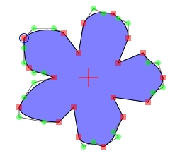
Komendy:
- m <x> <y> - przenosi kursor do podanego punktu, zaczynamy tym każdy rysunek. W przypadku gdy stawiamy tę komendę po raz kolejny to zamyka nam poprzedni kształt korzystając z linii i zaczyna nowy. Gdy chcemy zakończyć rysunek krzywą, trzeba ją tam dodać, ustawiając jej punkt końcowy w miejscu punktu początkowego m tego kształtu.
- n <x> <y> - działa tak samo jak m tylko nie zamyka kształtu, a co za tym idzie, kształt bez zamknięcia w ogóle się nie wyświetla, więc albo sami go zamykamy albo wykorzystujemy m.
- l <x> <y> - rysuje linię, począwszy ostatnich koordynat poprzedniej komendy kończąc na koordynatach tej komendy.
- b <x1> <y1> <x2> <y2> <x3> <y3> - rysuje krzywą Béziera składającą się z 4 punktów, gdzie koordynaty poprzedniej komendy to początek, (x3,y3) to koniec, a (x1,y1) i (x2,y2) to punkty kontrolne leżące poza krzywą. Więcej informacji na ten temat można znaleźć w wikipedii.
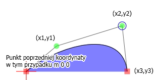
na rysunku pokazałem, gdzie przypadają poszczególne punkty. Ta krzywa normalnie pozwala na wiele punktów ale sterowanie nimi jest wtedy bardzo trudne, więc dlatego zostano przy 4 punktach.
- s <x1> <y1> <x2> <y2> <x3> <y3> .. <xN> <yN> c - rysuje b-sklejaną (b-spline) czyli krzywą podobną do krzywej Béziera z taką różnicą, że żaden punkt z podanych punktów nie leży w ogóle na krzywej, ale za to dostajemy więcej możliwości. Kształt jest od razu zamknięty krzywą, przykładowo 4 punkty w równych odstępach dają pseudo-koło, a zamienienie dwóch punktów daje w pionie daje znak nieskończoności, zwężając / rozszerzając punkty można elipsę dostać bądź łezkę.
- p <x> <y> - rozszerza b-sklejaną o jeden punkt. Kainote raczej będzie ignorował tą komendę rozszerzając bezpośrednio komendę s, bo z tego co sprawdzałem samo dopisanie p 100 100 daje niewłaściwy efekt bez c na końcu.
- c - zamyka b-sklejaną. Bardzo ważna komenda bez niej krzywa b-sklejana wygląda jakby używała tylko pierwszego punktu. Przy korzystaniu ze skrótów ctrl+prawy przycisk i alt + prawy przycisk jest dodawana automatycznie.
Dzięki drugiej metodzie możemy zrobić ruchy nieliniowe i wielokrotne w jednej linijce. Wystarczy tylko narysować rysunek, którego nie będzie widać i dać po nim tekst. przykładowo {\p1} m 0 0 m 100 100 {\p0\r}tekst. Rysunek możemy skalować wielokrotnie, używając animacji co sprawi przemieszczanie się tekstu, reset sprawi, że skalowanie nie wpłynie na sam tekst, lecz tylko na rysunek.
Istnieją jeszcze tagi wykorzystywane w filtrze napisów Vsfiltermod, jednakże jest mało wydajny i lubi się kraszować przy mocniejszych efektach, więc ich tu nie podam, poza tym Kainote nie daje możliwości zmiany swojego Vsfiltra. Aczkolwiek nie znaczy to, że w przyszłości ktoś nie rozszerzy możliwości Vsfiltra używanego przez Kainote o dodatkowe tagi czy też sam nie dodam tych z Vsfiltermod.
Przykład
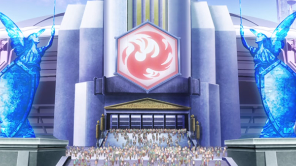
Wzór obrazka na którym zobrazujemy użycie rysunków oraz clipów.
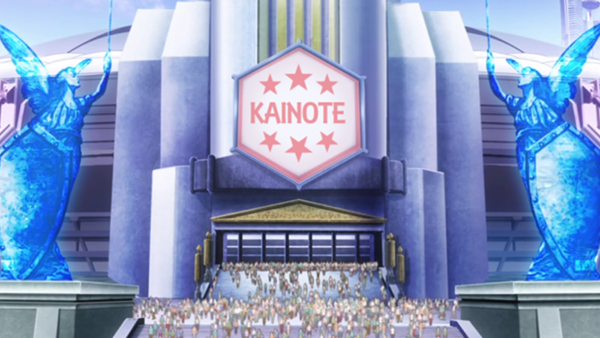
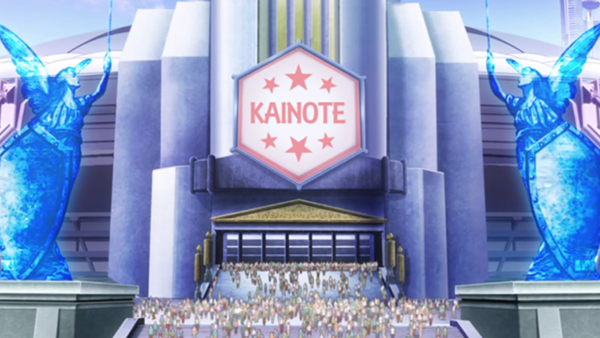
Jak widać na powyższych obrazkach zostało zamaskowane logo, co przyczyniło się do jego zmiany.
W tym celu zostało nałożone kilka masek obrazu oraz niektóre przycięte do kształtu sześciokąta przez clip.
Widoczne gwiazdki są zwykłymi rysunkami.
Created with the Personal Edition of HelpNDoc: Free EPub producer